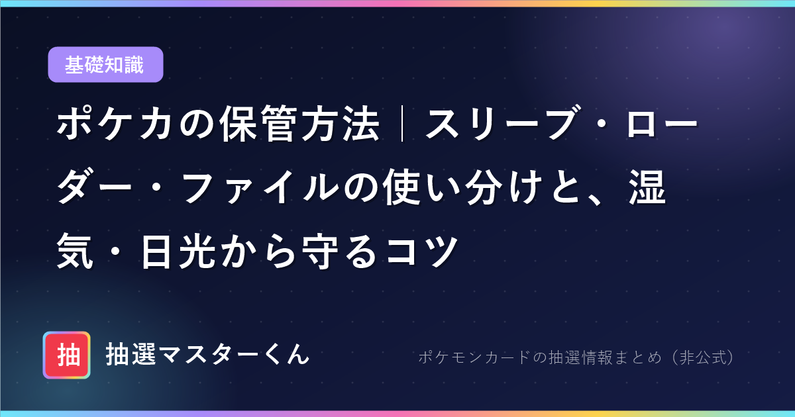

ポケカの保管方法｜スリーブ・ローダー・ファイルの使い分けと、湿気・日光から守るコツ

抽選でやっと手に入れたカードや、パックから出た当たりカード。きれいな状態で残しておくための保管方法をまとめます。
まずはスリーブに入れる
スリーブは、カードを1枚ずつ入れる透明な袋です。傷や指の脂、ほこりからカードを守ります。
- 対戦で使うカード：デッキ用のスリーブに入れます。柄の付いたスリーブも多く売られています
- 大事なカード：ぴったりサイズの「インナースリーブ」に入れてから、もう1枚スリーブを重ねる二重がけがおすすめです。すき間からほこりが入りにくくなります
特に大切なカードはローダーへ
ローダー（トップローダー）は、スリーブに入れたカードを差し込む硬いプラスチックのケースです。曲がりや折れを防げるので、高価なカードや思い出のカードに向いています。
たくさんのカードはファイルや箱で
- カードファイル（バインダー）：コレクションを見返しやすく、整理にも便利です。リング式のものはカードが曲がる原因になることがあるので、カード専用のファイルを選びましょう
- ストレージボックス：対戦で使わないカードをまとめてしまっておく箱です
保管場所で気をつけること
- 直射日光を避ける：日光に当たり続けると、色あせの原因になります
- 湿気を避ける：湿気はカードの反りやカビの原因になります。押し入れなどに入れるなら、乾燥剤を一緒に入れておくと安心です
- 重いものを上に置かない：カードが曲がったり、跡が付いたりします
- 温度の変化が大きい場所を避ける：夏の車内などに置きっぱなしにしないようにしましょう
未開封のBOXやパックは？
未開封のまま保管する場合も、直射日光と湿気を避けるのは同じです。BOXはシュリンク（透明フィルム）を破らないように、角がつぶれないよう立てずに平らに置くのがよいでしょう。
用語がわからないときは、ポケカ用語ガイドもどうぞ。
当サイトは非公式のファンサイトです。価格・日程などは記事公開時点の情報なので、最新の情報は公式サイトや各販売店でご確認ください。